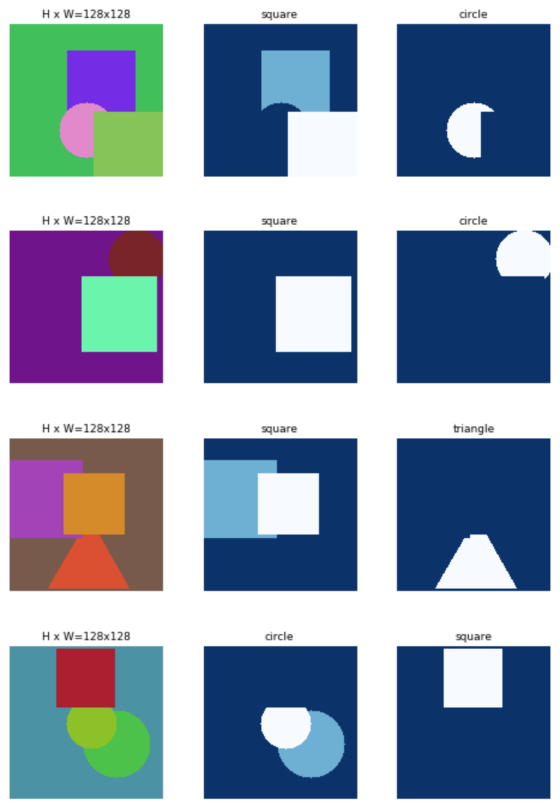

This reseach involves:
- Explanation of solutions to a given math problem by generating a sequence of solution micro-steps,
(execution of all such micro-steps would yield the correct solution).
- Determination of math problem micro-steps for the entire K-12 curriculum.
- Comprehending information provided in text and images (understanding of problems that encode
part of the information in companion images).
- Explanation of the solution in an interactive dialog format, taking into cosideration
the prior knowledge (in the curriculum) of the learner.
The research effort will address the following challenges:
- A master and hieractical map of math concepts and associated problem solving micro-steps.
- Understand information encoded in both text and images (of math problems).
- An authoring enviroment where experts can write detailed and step-by-step solutions to math problems -
utilizing the math-micro-steps and adding additional meta data that can help train the neural net.
The research will utilize recent results from the following efforts:
